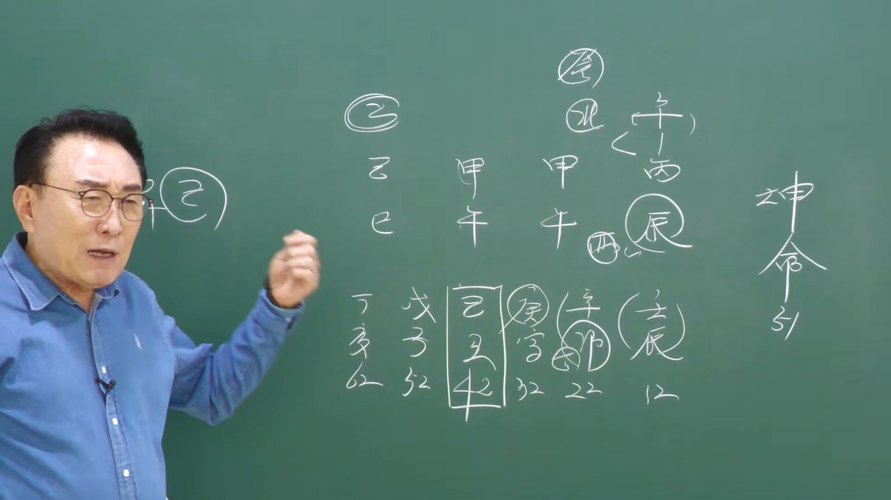

남촌물상TV 전체 문서 › 동영상 V0182
나도 암에 걸릴 수 있을까? 바로 확인할 수 있다

| 문서 번호 | V0182 (동영상) |
|---|---|
| 영상 URL | https://www.youtube.com/watch?v=M8pNP1EZQ-Q |
| 영상 ID | M8pNP1EZQ-Q |
| 게시일 | 2026-04-25 |
| 길이 | 19:11 (1151초) |
| 조회수 | 254회 (수집 시점 기준) |
| 카테고리 | Education |
| 자막 | ko (자동생성) |
| 수집 시각 | 2026-08-30 19:08 (KST) |
영상 설명 (YouTube 설명 원문 그대로)
김대영 교수 사주 상담
010~3139~6645 (예약필수)
사주상담 # 물상론 사주# 명리학# 성명학# 궁합# 택일#
물형상# 운명학# 남촌물상론#
전체 자막 (457구간 · 타임스탬프 클릭 시 해당 장면으로 이동)
[0:00]자, 밴두에 올린 사주가 이제 이런
[0:03]사주들을 보시면 여자 51세 병진
[0:07]병호 갑옷 갑옷 기사 이제 이런
[0:11]사주가 이렇게 눈에 나와 있어요.
[0:14]이제 이런 사주 보면 굉장히
[0:15]답답하죠.
[0:17]>> 답답해. 예. 그 눈에 이런 거 보면
[0:21]좀 눈이 들어오지 않아요. 뭐가 제일
[0:23]먼저 들어와요?
[0:25]불바다 불바다 그럼 자 불바다가
[0:29]불바다가 되면이 나무가 다 타겠네
[0:32]그럼 이제 타불면
[0:35]무엇이 문제겠느냐
[0:37]뭐 죽느냐 사느냐겠죠 기록하죠 그러면
[0:39]이제 제일 중요한 것은이 갑목에
[0:43]뿌리가 없다는 것은 을목의 성향이라고
[0:45]보시면 돼요. 그 을목의 성향이 두
[0:47]개 있잖아요. 나란이 이게 이제
[0:49]소위이 사람은 유방암 환자입니다.음
[0:51]음. 그래서 현재 유방암 치료를 받고
[0:53]있는 사람이에요. 수술도 하고 그럼
[0:55]자 그다음에 불이 많으면 뭐가 또
[0:58]높겠어요?
[1:00]>> 금이 높죠.이
[1:01]>> 사람은 또 폐 폐 그 수술도 했던
[1:03]사람이에요. 그니까 제가 검증을 쭉
[1:06]해 보면 이러한 것이 눈에
[1:09]들어오게뿐만 아니라 실제 그렇습니다.
[1:12]음.
[1:14]그래서 어 이분은 지금 현재에 제일
[1:17]처음에 유방암 수술 했고 그다음에 또
[1:20]폐 수술했어요. 어 그리고 지금까지
[1:23]이제 그 와 있는 단계인데 그래서
[1:25]제가 우리 물상도 사지 볼 때 제일
[1:28]언론 눈에들을 수 있는게 불이 많아가
[1:30]탓탔다 두 개예요. 갑목이 두 개야.
[1:34]그럼 결과적으로 을목이면 을목이
[1:36]뿌리가 묘 아닙니까? 그가지고 여자의
[1:39]유방을 볼 수가 있다. 여자니까
[1:41]그렇게 보면 불이 많으면 어디가 또
[1:43]탈까? 근데 사실 금이 없을 때는
[1:47]없을 때는 그렇게 바로 문제가
[1:50]나와요. 타는 건 급 우선 불 타는
[1:53]것은 나무죠.
[1:54]>> 목이란 말이야. 근데 나중에 이제 저
[1:57]우운이 올 때 끝나올 때 되면은 뭐가
[2:01]문제냐? 이제 폐에 문제가 온다 그
[2:04]말이에요. 금융이 올 때는 그냥
[2:07]치통이 나갔어요. 근데 금문이 안 올
[2:10]때 이제 문제가 된다. 그건 뭐예요?
[2:12]결과적으로이 금이 높고 없어진다라고
[2:14]이해하시기 때문에이 사람들은 그 폐의
[2:18]전이 돼서음
[2:20]암진달 받고 폐수됐던 사람 중에
[2:23]하나다.
[2:24]이렇게 결론을 쉽게 볼 수가 있는
[2:26]거예요. 그래서 제가 요즘에 암의 윤
[2:29]그 문제를 굉장히 연구를 많이 하다
[2:31]보니까 암의 환자 부분에 사주를 제가
[2:34]많이 수집을 하고 있어요. 환자들 좀
[2:36]자주 좀 보내주봐서 저한테 카톡으로
[2:38]보내주든지 보내 주시면 이걸 자꾸
[2:41]수집을 해서 이걸 가지고 그 정답을
[2:44]찾아드릴 수 있다 하기 때문에 잘
[2:46]보내 주시기 바랍니다. 자 그러면이
[2:48]이런 사주들에 이제 보면 자는게 제일
[2:52]없는게 뭐가 필요해요?이 사람이 제일
[2:53]필요한 게
[2:55]>> 자 나무가 사는 데는 물이
[2:57]필요하잖아요.
[2:58]근데 물이 천가해서 끌어올 차가
[3:01]하나도 없어요. 그죠?
[3:04]자, 합의사라온 것은 신금을
[3:07]끌어다가 합을 해서 만들기 때문에
[3:10]그건 제2의 단계고 직접적으로 뭐
[3:13]정화가 임수를 끌어온다든가 이런게
[3:16]없다 그 말이에요. 그 계수가 뭐
[3:18]무토가 계수를 끌어온다 이런게 전혀
[3:20]없어요. 그러면 물이 끌어올 자는
[3:22]하나도 없다. 이렇게 이해하시면
[3:23]돼요. 음.
[3:25]>> 자, 그다음에 지지는 그 물이 끌
[3:28]있냐? 하나도 없죠요.
[3:30]>> 그러니까이 사주 자체가 물이 하나도
[3:33]없다고 생각하시면 돼. 그러면 자,
[3:35]우리가 어떤 행위를 하게 되면 물이
[3:39]생길까 이걸 생각하셔야죠. 첫째음
[3:42]그것이 이제 나의 직업이고 내가
[3:44]행동할 수 있는 일이에요.
[3:47]우선 내가 살아야 되니까 뭐가
[3:48]필요해요? 물을 만들 수 있는 일을
[3:50]할 건데 무슨 일을 할 거냐가 중요한
[3:53]거고 어떻게 물이 생산이 돼 하는
[3:55]거란 말이에요. 자, 그다음에
[3:58]또 뭐가 없어요? 금이 없죠.
[4:00]>> 자, 금이 없다.
[4:03]금이 없다는 얘기는
[4:06]물을 생산할 수 있는 금이 없다
[4:08]얘기예요.
[4:10]그럼 이제 금이 있다는 금을 금을
[4:13]만들려면 어떻게 할 것이냐 보면
[4:14]끌어온 자를 또 태가 되죠. 물을
[4:17]만드는 자는 아예 없었다.
[4:19]근데 금을 끌어온 자는 있어요?
[4:20]없어요? 정갈에 아 있다. 여기에서
[4:24]신금을 끌어오면
[4:27]뭐가 생겼어요? 합수의 계수가
[4:30]생겼다. 이렇게 보시면 되죠.
[4:32]이해가 되죠? 그럼 이제 우리 항시
[4:35]얘기하지만
[4:37]아까 물을 꿇은 자 하나도 없었는데
[4:41]금이 물을 생산할 건데 금을 끌어온
[4:44]자는 있느냐? 아, 청가 있었다
[4:45]이거예요. 그죠? 자, 그러면
[4:50]지지에서는
[4:52]금을 꿇은 자가 있느냐? 이거 차
[4:53]파면 되죠. 자, 지지에서는 진토에서
[4:56]뭐 끌고
[4:58]>> 유금을 끌고잖아요.
[5:00]자, 그러면 자, 4에서는 그
[5:04]사유축을 끌고죠.
[5:07]그 사유축 그러면 자,
[5:10]본래 사화는 자, 봐요. 차이가
[5:13]있어.
[5:14]사화는 사화에서
[5:17]유금을 끌어다가 진수 차유축이 되는
[5:20]거고 진토는 바로 유금을 끌어온 거고
[5:24]어디가 먼저예요?
[5:25]>> 진
[5:26]>> 진유가 먼저죠. 이렇게 9별에서
[5:28]샤버려도 된다. 이걸 보셔야 돼요.
[5:31]자, 그러면
[5:33]바로 병화가 신금을 끌어오면 지지에
[5:37]바로 유금이 붙어 그 말이에요.
[5:40]바로 끝나면 유금이 붙어잖아요. 그럼
[5:42]진주학급을 한다 그 말이에요.
[5:43]사회축은 나중에이 얘기야. 지금
[5:46]본인이 할 일이 아니 나중에이
[5:49]얘기라고.
[5:51]제일 급한 거는 물을 바로 만들 수
[5:52]있는 역힘이 필요한데 자기가 필요한
[5:55]직접 풀 맺는 것은 여기에서 끌어왔단
[5:57]말이야. 국가자리 자리에서. 자,
[5:59]그러면
[6:01]저 합수가
[6:04]저 계수의 물이 물이 쉽게 얘기해서
[6:08]어떻게 생산이 되느냐? 신금
[6:10]합을 했다. 근데 지지에도 유금이
[6:13]되니까 진유학 불어서. 자, 그러면
[6:15]이제 물이 생겼다. 이렇게 볼 수
[6:16]있죠.
[6:17]그럼 이제 금과 수가 있는데
[6:22]저 계수 물로서이 감목들이 수요
[6:25]충적이 되느냐? 안 된다 그
[6:27]말이에요. 근데 우선 급한게 뭐냐?
[6:30]급한게 물을 만들어야 되는데 자
[6:32]지지에서 지지에서 보면
[6:34][목을 가다듬음]
[6:36]어떤 일을 하게 되면 쉽게 해서 물이
[6:39]생산이 되고 나무가 살 거냐 그 얘기
[6:42]아니에요? 그러면 여기서 지지에서는
[6:45]목의 뿌리로서 끌어올 자는 해매이
[6:48]하나밖에 없는데 없다 그 말이에요.
[6:51]근데이 사람이이 사람이
[6:55]없는데 이제이 행위를 하게 되면
[6:57]어떻게 할까? 목이 행위를 하게 되면
[7:00]>> 자 해묘미를 만들려니까 물을 꿇고
[7:02]싶어서 그래서 했단 말이에요. 그럼
[7:04]될까 안 될까?
[7:05]>> 자 안 되죠.
[7:06]>> 근데이 사람이 초운에 여기까지가 물을
[7:10]만드는 운이 왔어요? 안 왔어요?
[7:12]왔어. 왔어요.
[7:12]>> 왔기 때문에 이제 자기 생각이 달라진
[7:15]거예요. 그러니까 그때 상황이 어떻게
[7:18]흘러갔느냐의 그 사람의 그때 당시
[7:22]상황이고 그 이후의 상황은 또 그
[7:25]이후의 상황으로 가고 있다고
[7:27]이해하시면 돼요. 그러면
[7:30]사람이 이제에 전체적으로 우리는
[7:32]악구를 봤을 때에 유금이 반드시
[7:35]필요하네. 이제 이거는 기본적으로 다
[7:36]알고 있어요. 기본적으로 다 알고
[7:38]있어요. 근데이 사람이이 저는 여러
[7:42]가지 생각을 많이 해 봤어요. 어떻게
[7:44]하면이 사람이 암이 안 걸릴 수가
[7:46]있는가를 생각을 해 보고 또 어떻게
[7:48]하면 암을 치료할 수 있는가를
[7:50]생각하는데 제일 처음에 생각한 것은
[7:54]어느 환경에 어떻게 살아이 행용도를
[7:55]했으면이 사람이 안 거들 거대이
[7:57]생각을 하고 한다 그 말이에요.
[8:00]그죠? 자, 그러면 잘 보시면 근데이
[8:03]사람이 이제 임진물이라버렸어요.
[8:06]여기에서 생각이 달라지는 거예요.
[8:09]자, 임진 온다는 얘기는
[8:12]물이 많이 오잖아요.
[8:14]>> 태양이 또 물에 떠.
[8:16]>> 그러니까 우선 여기 기초의 탁수는
[8:18]나중 얘기야. 우선 태양이 물 뜬단
[8:20]말이에요. 그럼 태양이 뜨니까 감옥
[8:22]꽃 풀 것 같아 생각을 해.
[8:24]그러니까이 사람이 공부를 교육에
[8:26]공부를 하고 싶어 하는 거 하고
[8:27]싶어? 하고 싶을 거 아니에요.
[8:29]그래서이 사람이 사실은 초 선생을
[8:31]했던 사람이에요.
[8:33]>> 초선했던 사람이야.
[8:36]>> 근데 그것이 이제 여기까지 보면 신묘
[8:40]대응을 보면 합수 아니에요?
[8:43]>> 자 합수였어요. 자격진 생겼어
[8:45]안 생겼어?
[8:46]>> 생겼네. 그럼 자지 뿌리가 묘죠.
[8:50]>> 뭐죠? 그럼 이제이 묘의 뿌이니까
[8:53]을목의 뿌이 아니에요. 어쨌든간에
[8:56]그럼 목의 뿌이 자격증이다 그
[8:58]말이에요. 뭔 아시겠죠? 그 자격증이
[9:01]얘를 먹는 쪽이 자격증이냐 예를
[9:04]들어서 뭐 어 어떤 어 교육적인 자
[9:08]자 자격증이냐 이걸 볼 때 뿌리를
[9:10]찾아서 찾아보라 그 말이에요.
[9:12]>> 이제 이해됐죠? 그럼 여기 뿌리가
[9:14]이때 자격지라는 것이 자이 [콧방귀]
[9:19]묘가 온다는 얘기는 뭐가 온다는
[9:21]얘기는 뿌리면 나무에 묘가 오는
[9:23]거죠.
[9:24]>> 그 사실상 가상으로 본다면 갑목에
[9:27]뿌리가 없다고 보면 이게 쉽게
[9:30]얘기해서 그냥 묘을 봐야 되는데 일단
[9:33]묘니까 갑목이 임묘 이게 붙으네요.
[9:36]인이 붙어. 붙어요? 안 붙어요?
[9:39]>> 임묘진이 되지 않아요.
[9:42]>> 그죠? 예.
[9:44]>> 그래서 학교를 학교를이 사람이 쉽게
[9:46]그 저 어 할 수 있는 거예요.
[9:49]>> 자 그러면 자이 사람이 전문대학교
[9:52]2년에 다 다니다가 3년주에도 갈 수
[9:55]있고 4년주에도 갈 수 있다는
[9:56]얘기예요. 편입도 되가능해요.
[9:58]그러니까 20대 운에이 사람은이 목의
[10:02]행위를 하게 돼 있구나라고 이해
[10:04]된대요? 되지 않아요.
[10:10]그니까 목회가 저 한게 아까 교육이
[10:12]아니에요. 교육자 그게 선생하는
[10:14]거예요. 그게 선생을 했는데 했는데이
[10:18]사람이 이제 여기 경인 대원에
[10:20]왔어요. 경인 대원에 그러면 잘
[10:22]보시면
[10:25]여기에서 경인 대운이란 것은 어떤
[10:28]현상이 오느냐? 일단 뭐이 을목을
[10:31]끌고 와. 좋아요.
[10:33]좋아.
[10:34]그러면 임묘진이 될 수 있다라고 할
[10:37]수 있죠. 근데 중요한 것은
[10:41]경금을 끌어올 수 있는 자가 없다 그
[10:45]말이에요. 항시 그제 우리는 끌어온다
[10:48]조건이 내가 교 교 교수님 무조건 막
[10:51]그냥 끌고 생각해 봐 생각해 봐요.
[10:52]했는데
[10:54]뿔이 큰 거를 찾아봐야 돼. 그럼
[10:56]여기가 얼목이라도 있었다면
[10:59]있었다면 끌고 올 수 있겠죠.
[11:01]근데지지 신이 아니야. 신금이 올
[11:03]때는 경금이 돌출할 수가 있지만
[11:06]여기는
[11:08]임목이란 말이에요. 그럼 제가 임목에
[11:10]목에 뿌리만 됐지. 금유로서는
[11:14]결과적으로 끌롤차가 아니다 그
[11:16]말이에요. 그러면 이제 금이 자체가
[11:17]하나 있는 거예요. 그죠? 그럼 금이
[11:21]쓸모가 있어요? 없어요? 별로 없죠.
[11:24]별로 필요 없다 그 말이에요. 그러면
[11:27]여기이 사람은 이노술이냐?
[11:30]이신사예요. 이거 둘 중하다란
[11:32]말이에요. 그럼 자
[11:35]갑목에 뿌리가면 이옷을 할 거
[11:36]아니에요.
[11:38]>> 그럼 이제 불바다가 되죠.
[11:40]>> 네.
[11:40]>> 그러면이 대운에 문제가 될까 안
[11:42]될까?
[11:43]>> 되죠.
[11:46]>> 인호이 되니까 타을 때 언제냐?
[11:48]그러면이 사람이 경인 대운에 한번
[11:51]잠깐만 보자. 자, 경인 대원에
[11:54]보면은
[11:55]인이 오니까 말 저 어 끝에가 그 어
[11:59]병신년이었죠.
[12:02]2016년도가
[12:05]>> 예 평신 병신이
[12:07]>> 평신이 왔죠?
[12:08]>> 네.
[12:08]>> 자 그러면
[12:10]>> 잘 보세요. 제가 여기서 한다 또 안
[12:13]놓을 밝혀 드릴게.
[12:16]>> 그러면 신이라는 것이 왔어요.
[12:18]>> 네.
[12:19]>> 사화가 지금 기본적으로 있죠?
[12:21]>> 네.
[12:23]4가 기본적으로 있어요. 그다음에
[12:25]인목이 있죠. 감목이 뿌리니까.
[12:28]>> 자, 인목이 있어요.
[12:30]그럼 여기에서 이제 자, 우리가
[12:33]인신사의 개념이다 이렇게 할 수도
[12:34]있지만이
[12:36]여기에서 한번 더 깊이 생각한 방법을
[12:38]제가 읽 줄게.
[12:40]>> 자, 사화는 사화는 뭘로 합을했어?
[12:44]사유축이 유금으로 합을 했고 신금은
[12:48]>> 자 신자진
[12:48]>> 자 신자진으로 합을 했고 인호는이는
[12:52]인호술로 합했다는 거 그럼 자오매가
[12:54]돼요 안 돼요
[12:55]>> 된다.
[12:57]>> 이제 아셨죠?
[12:58]>> 그러면 쉽게 얘기해서 대운에
[13:02]병이 두 개 따르는 거지
[13:05]>> 그죠?
[13:06]>> 그럼 자이 모아래가 태양이 인호수이
[13:09]될 거 아닙니까? 그게 불 났나?
[13:12]>> 나죠. 그렇게 되는데 지지에는 인신
[13:16]사회라고 하지만 자오묘의 형태가 돼
[13:18]있다 그 말이에요. 이때
[13:21]2016년도에 유방 함수를 했습니다.
[13:25]2010년도에 유방 함수를 했어요.
[13:28]자, 어 그래서 이제 창업반에서 하나
[13:32]더 깊이 들어가면이 형태를 잊지 마라
[13:35]그 말입니다. 아셨죠? 자, 이럴
[13:38]때도 수술수가 생기는구나 하는 것을
[13:41]이해하셨다 그 말이에요. 음.
[13:45]자 그러면 이런 사람들이 이제 그때
[13:47]이미 유방이 생기 이때이 대우는 일찍
[13:49]해 줬어요.대
[13:52]경인데 너 인옷로 불타라 하고 얘기해
[13:55]줬다 그 말이에요. 근데 금이 와서이
[13:58]나무와 관계 좋은 관계는 아니잖아요.
[14:01]어 그래서 중요한 것은이 불타게
[14:04]되니까 결과적 이때 유방이 하는데
[14:07]지지의 신이란 글씨는 아 인신 사액
[14:10]연결되니까
[14:12]수술했겠네 이렇게 이해해도 답은
[14:15]정답이다 그 말이에요.
[14:17]이제 확실히 아셨죠?
[14:19]자이 활용하는 법하셨어요? 이제 그
[14:22]기초을 안 가르쳐 준 거예요. 그래서
[14:25]이제 이걸 활용을 하면 수술수한게
[14:26]정확하게 집어서 낼 수가 있기 때문에
[14:29]잘 짚어 보시면 된다 하는 걸 말씀을
[14:31]드립니다. 우리가 이제 합의 원리로서
[14:35]합을 하면 그러면 합하면은 어떻게
[14:37]될까? 각기압 각기압 토 막 이렇게
[14:40]했는데 자이 경우가 그 얘기했다 그
[14:43]말이에요. 자 그런데 여기서 이제 한
[14:46]가지 더 오늘 팁을 줄테니까 활용하실
[14:48]때 잘오시면 돼요.
[14:51]갑기 합이
[14:54]돼 있다는 얘기는
[14:56]갑 인으로 인호수리돼 불타도 자
[14:59]여기서 여기 이해하시 자 만약에
[15:02]각합이 돼 있어요. 근데지지 이노수도
[15:04]갑목이 타게 돼 있어.
[15:08]그러면 각기 합이 돼 있을 때는
[15:13]자 감목이 합기 합을하면 뭘로
[15:14]벗겼어? 을목이 갑목이
[15:17]>> 을목으로 딱 벗겼어요.
[15:20]이런 것을 예측한 다음에 뭘
[15:23]예측하느냐? [목을 가다듬음]
[15:24]각기 합을 하면지지 불타도 속이 숨어
[15:27]있다고 하시면 돼.
[15:29]>> 이제 이것이 비법이야. 여러분들한테
[15:32]활용하는 방법을 하나 더 밝혀 드리는
[15:34]거예요. 그러면 각기 합이 돼 있을
[15:37]때 진짜 불로 탈 거냐? 안 타요.
[15:41]을목으로 숨어 있어.
[15:44]보를 받는 거예요. 자, 우리가
[15:46]그랬잖아요. 쉽게 이해하자면 산불이
[15:48]막 타고 올라가요. 근데 오르니까
[15:51]감당을 못 해. 땅을 파서 흙파고 내
[15:53]뒤집어 쉬고 있어. 살 안 살아?
[15:56]>> 그와 같은 이치로 생각하라 그
[15:58]말이에요.
[15:59]>> 확실히 이해되셨죠?
[16:01]음. 요거는 이제 그 특별히 써먹는
[16:03]방법이 있어.
[16:05]>> 자, 그다음 또 하나 더.
[16:09]이제에
[16:11]사주에서 사주에서 여기는 기토가
[16:14]있습니다만은 기토가 없을 때 만약
[16:17]기토운이 왔다고 가정을 합시다. 예.
[16:21]그럼 각기 합을 할 거 아니에요.
[16:23]>> 내가 묶여? 안 묶여? 묶여.
[16:26]>> 안 묶기죠.
[16:28]두 개 있는 것이 좋을 때도 있고 안
[16:30]좋을 때도 있지만 좋을 때도 있어요.
[16:33]저 같은 경우 무자 무자 아닙니까?
[16:36]>> 하나 제거를 한다.
[16:39]>> 괜찮아, 괜찮아?
[16:40]>> 그래, 나는 괜찮아.
[16:42]>> 이제이 개념을 또 하나를 더
[16:44]이해하셔야 된다 그 말이에요. 자,
[16:46]그다음
[16:48]3대 1 합을 했을 때
[16:50]>> 자, 감목이 세 개가 다 합을해요.
[16:53]이렇게 감목이 세 개가 다 기토
[16:56]합을해.
[16:58]자, 이럴 경우
[17:01]자, 뭐 그냥 합을 안고 세 개가
[17:04]합이 안 될 때부터 왔어. 그러면
[17:07]여러분 생각할 때 하나로 생각한다라고
[17:10]하지.
[17:11]>> 근데 지지의 뿌리가이 있을 때 하나가
[17:15]되는 거예요. 다시 한번 얘기지만.
[17:17]자, 이런 경우는 지지에 인목이 있을
[17:21]때 내가 갖고 있냐, 누가 갖고
[17:23]있느냐 따라서
[17:26]통수권이 나한테 있냐 없냐 그
[17:27]소리예요.
[17:29]>> 자, 그럼 내가 일간이 갑이었어요.
[17:31]여기 월이 있고 사주가 시 다
[17:33]있어요. 그럼 내가 갑인이었어. 3대
[17:35]1 경우는
[17:37]모든 뿌리가 나한테 존속이 있을 때는
[17:41]총소가 나라고 사주를 인정하라 그
[17:43]말이에요.
[17:45]>> 이것도 비법이야.
[17:47]이걸 잘 아셔야 돼. 그럼 자, 3대
[17:51]1로 각기 합을 했을 때 그러면 이게
[17:54]하나가 됐다고 가져갑시다.
[17:56]그죠? 자, 그러면 이런 경우는 3대
[17:59]1로 묶기는 거예요.
[18:02]묶여. 그런데 지지의 오가 이노수를
[18:04]불타 때도 3대 1로 묶여 놓으면
[18:07]불이 탄다. 안 탄 걸로 이해하라.
[18:11]묶여서 보호를 받으면
[18:15]숨어 있거 생각하라 그 말이에요.
[18:18]그렇게 해석하셔야 됩니다. 아셨죠?
[18:20]한가 더 여기에
[18:25]나는 갑목 일간 일목을 갖고 여기
[18:27]값신을 갖고 있어.
[18:31]>> 예.
[18:31]>> 당연히 내가
[18:33]>> 그러면 이런 경우는이 사람한테 명예를
[18:36]주면 돼. 뭔 얘기하요? 명예를 주고
[18:39]실속은 내가 다지고 있는 뿌리는 내가
[18:41]그러니까 자 뭐냐면 원은 나고 너
[18:43]본급적인 사장들다 인용할 수 있는
[18:45]거예요. 뭔지 아시겠죠? 뿌리를 가진
[18:48]사람이 우선이야.
[18:51]미하셨죠? 그러니까 내가 뿌리를 갖고
[18:54]있으면 다른 놈들은 관 가진 놈들은
[18:57]쉽게 바지사장 세우면 된다 그
[18:59]말이에요. 쉽게
[19:01]그런 식으로 이해하시면 돼요. 그
[19:03]이런 것을 잘 이해하셔야 나중에
[19:05]여러분들이 사주 풀 때 가장 쉽고
[19:08]정확하게 풀 수 있다. 교수님 그
[19:10]무토일 경우에
칠판 원국 판독 (영상 프레임을 AI가 시각 판독 · 원판 대조 필수)
坤造
천간
乙
천간
甲
천간
甲
천간
丙
지지
巳
지지
午
지지
午
지지
辰
판독 신뢰도: 높음
판독 노트: 坤命51, 월주=일주=甲午, 대운 역행 壬辰12~丁卯62, 辰酉합 주석 · 시점 17:03 · 해당 장면 보기↗
자막은 YouTube에서 제공하는 한국어 자동음성인식(ASR) 트랙의 원문입니다. 고유명사·한자 용어·숫자 표기에 자동인식 특유의 오류가 있을 수 있어, 원문을 가능한 한 그대로 보존했습니다. 위에 칠판 원국 판독 섹션이 있는 영상은 화면 프레임을 AI가 시각 판독한 것으로 신뢰도 표기를 확인하고, 없는 영상은 화면 도표가 문서에 포함되지 않습니다.